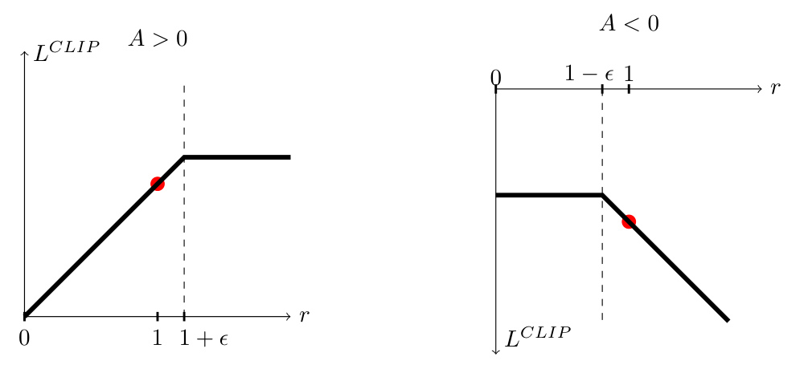
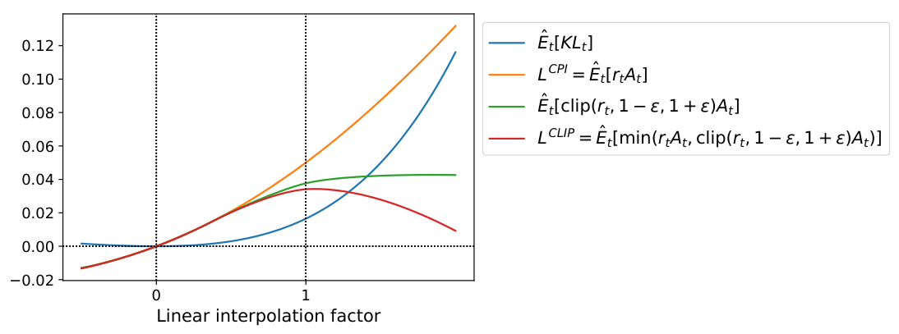
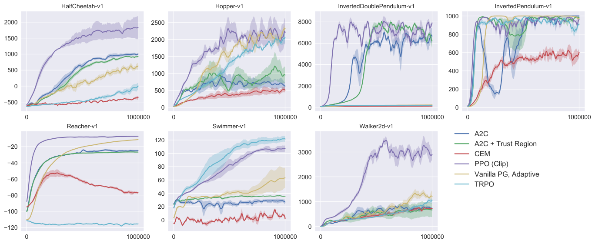
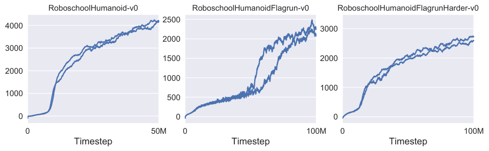
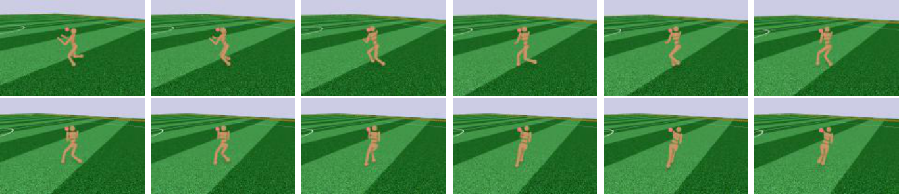
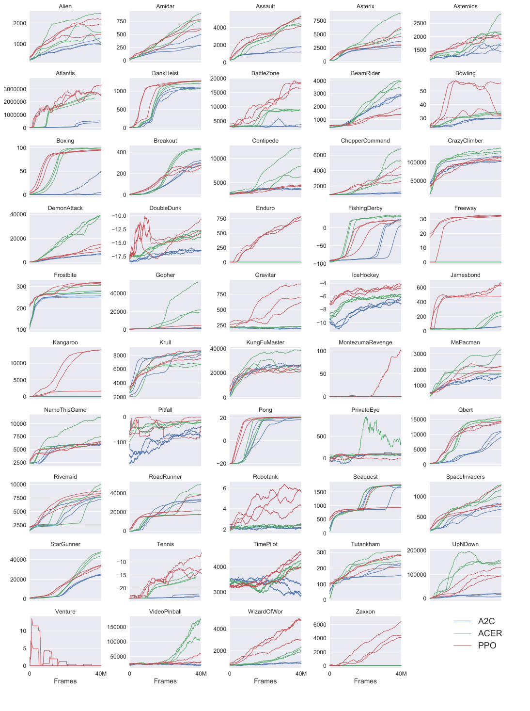

본 논문에서는 강화학습을 위한 새로운 policy gradient 방법군을 제안한다. 이 방법들은 환경과의 상호작용을 통해 데이터를 표본추출하는 단계와 stochastic gradient ascent를 사용하여 “surrogate” objective function을 최적화하는 단계를 번갈아 수행한다. 표준 policy gradient 방법은 데이터 표본당 한 번의 gradient update를 수행하지만, 본 논문에서는 여러 epoch의 minibatch update를 가능하게 하는 새로운 objective function을 제안한다. proximal policy optimization(PPO)이라 명명한 이 새로운 방법은 trust region policy optimization(TRPO)의 장점 일부를 지니면서도 구현이 훨씬 간단하고, 더 일반적이며, 경험적으로 더 나은 sample complexity를 보인다. 실험에서는 시뮬레이션된 로봇 locomotion과 Atari 게임 플레이를 비롯한 여러 benchmark task에서 PPO를 검증하며, PPO가 다른 online policy gradient 방법보다 우수하고 sample complexity, 단순성, wall-time 사이에서 전반적으로 유리한 균형을 이룸을 보인다.
최근 몇 년간 neural network function approximator를 사용하는 강화학습을 위해 여러 접근법이 제안되었다. 주요 후보로는 deep Q-learning [7], “vanilla” policy gradient 방법 [8], 그리고 trust region / natural policy gradient 방법 [10]이 있다. 그러나 확장 가능하고(대규모 model 및 병렬 구현으로 확장 가능하며), data-efficient하고, robust한(즉, hyperparameter tuning 없이 다양한 문제에서 성공하는) 방법을 개발하는 데에는 개선의 여지가 있다. Q-learning(function approximation을 사용하는 경우)은 많은 단순한 문제에서 실패하며1 충분히 이해되어 있지 않고, vanilla policy gradient 방법은 data efficiency와 robustness가 낮다. 또한 trust region policy optimization(TRPO)은 비교적 복잡하며, noise를 포함하는 architecture(예: dropout)나 parameter sharing(policy와 value function 사이의 공유 또는 auxiliary task와의 공유)을 포함하는 architecture와 호환되지 않는다.
본 논문은 first-order optimization만을 사용하면서도 TRPO의 data efficiency와 신뢰할 수 있는 성능을 달성하는 algorithm을 도입함으로써 현재의 상황을 개선하고자 한다. 본 논문에서는 clipped probability ratio를 사용하는 새로운 objective를 제안하며, 이는 policy 성능의 비관적 추정치(즉, lower bound)를 형성한다. Policy를 최적화하기 위해 policy로부터 데이터를 표본추출하는 단계와 표본추출된 데이터에 대해 여러 epoch의 최적화를 수행하는 단계를 번갈아 진행한다.
실험에서는 surrogate objective의 여러 상이한 version의 성능을 비교하며, clipped probability ratio를 사용하는 version이 가장 우수한 성능을 보임을 확인한다. 또한 PPO를 문헌에 제시된 여러 기존 algorithm과 비교한다. Continuous control task에서 PPO는 비교 대상 algorithm보다 더 나은 성능을 보인다. Atari에서는 A2C보다 sample complexity 측면에서 상당히 우수하고 ACER와 유사한 성능을 보이면서도 훨씬 더 단순하다.
Policy gradient 방법은 policy gradient의 estimator를 계산한 뒤 이를 stochastic gradient ascent algorithm에 대입하는 방식으로 작동한다. 가장 널리 사용되는 gradient estimator는 다음과 같은 형태이다.
(1)
여기서 는 stochastic policy이고 는 timestep 에서 advantage function의 estimator이다. 여기서 기댓값 는 표본추출과 최적화를 번갈아 수행하는 algorithm에서 유한한 sample batch에 대한 empirical average를 나타낸다. Automatic differentiation software를 사용하는 구현은 그 gradient가 policy gradient estimator가 되는 objective function을 구성하는 방식으로 작동하며, estimator 는 다음 objective를 미분하여 얻는다.
(2)
동일한 trajectory를 사용하여 이 loss 를 여러 step에 걸쳐 최적화하는 것은 매력적으로 보이지만, 그렇게 할 타당한 근거가 충분하지 않으며 경험적으로도 흔히 policy update가 파괴적일 정도로 커진다(6.1절을 참조한다. 결과는 제시하지 않았지만 “clipping 또는 penalty 없음” 설정과 유사하거나 그보다 나빴다).
TRPO [10]에서는 policy update의 크기에 관한 constraint 아래에서 objective function(“surrogate” objective)을 최대화한다. 구체적으로 다음과 같다.
(3)
(4)
여기서 는 update 이전의 policy parameter vector이다. Objective를 선형 근사하고 constraint를 이차 근사한 다음 conjugate gradient algorithm을 사용하면 이 문제를 효율적으로 근사하여 풀 수 있다.
실제로 TRPO를 정당화하는 이론은 constraint 대신 penalty를 사용할 것을 시사한다. 즉, 다음 unconstrained optimization problem을 푼다.
(5)
여기서 는 어떤 coefficient이다. 이는 특정 surrogate objective(state에 걸친 평균 KL 대신 최대 KL을 계산한다)가 policy 의 성능에 대한 lower bound(즉, 비관적 bound)를 형성한다는 사실에서 도출된다. 여러 상이한 문제 전반에서, 심지어 학습 과정에 따라 특성이 변하는 하나의 문제 내에서조차 우수하게 작동하는 단일 값을 선택하기 어렵기 때문에 TRPO는 penalty 대신 hard constraint를 사용한다. 따라서 TRPO의 monotonic improvement를 모방하는 first-order algorithm이라는 목표를 달성하려면, 고정된 penalty coefficient 를 단순히 선택하여 SGD로 penalty가 부과된 objective인 식 (5)를 최적화하는 것만으로는 충분하지 않으며 추가적인 수정이 필요함을 실험이 보여준다.
Probability ratio 를 로 나타내면 이다. TRPO는 다음 “surrogate” objective를 최대화한다.
(6)
위 첨자 는 conservative policy iteration [5]을 가리키며, 이 objective는 해당 연구에서 제안되었다. Constraint가 없으면 의 최대화는 지나치게 큰 policy update로 이어진다. 따라서 이제 가 1에서 멀어지도록 만드는 policy의 변화에 penalty를 부과하기 위해 objective를 어떻게 수정할지 살펴본다.
본 논문에서 제안하는 주된 objective는 다음과 같다.
(7)
여기서 epsilon은 hyperparameter이며, 예를 들어 로 설정한다. 이 objective의 동기는 다음과 같다. 내부의 첫 번째 항은 이다. 두 번째 항인 는 probability ratio를 clipping하여 surrogate objective를 수정하며, 이로써 를 구간 밖으로 이동시킬 유인을 제거한다. 마지막으로 clipped objective와 unclipped objective 중 최솟값을 취하므로, 최종 objective는 unclipped objective의 lower bound(즉, 비관적 bound)가 된다. 이 방식에서는 probability ratio의 변화가 objective를 개선하는 경우에만 그 변화를 무시하고, objective를 악화시키는 경우에는 이를 반영한다. 주위(즉, 인 지점)에서 first order까지는 이지만, 가 에서 멀어짐에 따라 두 objective는 서로 달라진다. 그림 1은 의 단일 항(즉, 하나의 에 해당하는 항)을 도시한다. Advantage가 양수인지 음수인지에 따라 probability ratio 이 또는 에서 clipping됨에 유의한다.

그림 2는 surrogate objective 에 관한 또 다른 직관을 제공한다. Continuous control problem에서 proximal policy optimization(곧 소개할 algorithm)을 통해 얻은 policy update 방향을 따라 interpolation할 때 여러 objective가 어떻게 달라지는지 보여준다. 은 의 lower bound이며, policy update가 지나치게 큰 경우에 대한 penalty를 포함함을 확인할 수 있다.

Clipped surrogate objective의 대안으로, 또는 그에 더하여 사용할 수 있는 또 다른 접근법은 KL divergence에 penalty를 부과하고, 각 policy update에서 KL divergence가 어떤 target 값 에 도달하도록 penalty coefficient를 조정하는 것이다. 실험에서 KL penalty는 clipped surrogate objective보다 성능이 나빴지만, 중요한 baseline이므로 여기에 포함한다.
이 algorithm의 가장 단순한 형태에서는 각 policy update마다 다음 단계를 수행한다.
(8)
Update된 는 다음 policy update에 사용한다. 이 방식을 사용하면 KL divergence가 와 크게 다른 policy update가 간혹 나타나지만, 그러한 경우는 드물며 가 빠르게 조정된다. 위의 parameter 1.5와 2는 heuristic하게 선택되었지만 algorithm은 이 값들에 그다지 민감하지 않다. 의 initial value 역시 또 하나의 hyperparameter이지만, algorithm이 이를 빠르게 조정하므로 실제로는 중요하지 않다.
앞 절에서 제시한 surrogate loss들은 일반적인 policy gradient 구현을 약간만 변경하여 계산하고 미분할 수 있다. 자동 미분을 사용하는 구현에서는 단순히 대신 loss 또는 을 구성하고, 이 목적함수에 대해 stochastic gradient ascent를 여러 step 수행하면 된다.
분산이 감소된 advantage-function estimator를 계산하는 기법은 대부분 학습된 state-value function 를 사용한다. 그 예로 generalized advantage estimation [9]이나 [8]의 finite-horizon estimator가 있다. policy와 value function이 parameter를 공유하는 neural network architecture를 사용하는 경우에는 policy surrogate와 value function error 항을 결합한 loss function을 사용해야 한다. 또한 이전 연구 [14, 8]에서 제안한 것처럼 충분한 exploration을 보장하기 위해 entropy bonus를 추가하여 이 목적함수를 보강할 수 있다. 이 항들을 결합하면 각 iteration에서 (근사적으로) 최대화되는 다음 목적함수를 얻는다.
(9)
여기서 는 coefficient이고, 는 entropy bonus를 나타내며, 는 squared-error loss 이다.
[8]을 통해 널리 알려졌으며 recurrent neural network에 사용하기에 적합한 한 가지 policy gradient 구현 방식은 policy를 timestep 동안 실행하고(여기서 는 episode length보다 훨씬 작다), 수집한 sample로 update를 수행한다. 이 방식에는 timestep 너머를 참조하지 않는 advantage estimator가 필요하다. [8]에서 사용한 estimator는 다음과 같다.
(10)
여기서 는 주어진 길이 의 trajectory segment 내에서 에 속하는 time index를 나타낸다. 이 선택을 일반화하면 generalized advantage estimation의 truncated version을 사용할 수 있으며, 이는 일 때 식 (10)으로 환원된다.
(11)
(12)
고정 길이 trajectory segment를 사용하는 proximal policy optimization(PPO) 알고리즘을 아래에 제시한다. 각 iteration에서 개의 (병렬) actor가 각각 timestep의 데이터를 수집한다. 그런 다음 이 timestep의 데이터에 대해 surrogate loss를 구성하고, epoch 동안 minibatch SGD(또는 대개 더 나은 성능을 내는 Adam [6])로 이를 최적화한다.
알고리즘 1: PPO, Actor-Critic 방식
for iteration = 1, 2, ... do
for actor = 1, 2, ..., N do
환경에서 policy π_{θ_old}를 T timestep 동안 실행한다
advantage estimate Â_1, ..., Â_T를 계산한다
end for
K epoch 및 minibatch size M ≤ NT로 θ에 관해 surrogate L을 최적화한다
θ_old ← θ
end for
먼저 서로 다른 hyperparameter하에서 몇 가지 surrogate objective를 비교한다. 여기서는 surrogate objective 을 몇 가지 자연스러운 변형 및 ablated version과 비교한다.
KL penalty에는 고정 penalty coefficient 를 사용할 수도 있고, Section 4에서 설명한 것처럼 target KL 값 를 이용하는 adaptive coefficient를 사용할 수도 있다. log space에서의 clipping도 시도했지만 성능이 더 낫지는 않았다는 점에 유의한다.
각 알고리즘 변형에 대해 hyperparameter를 탐색하므로, 알고리즘을 시험할 benchmark로 계산 비용이 낮은 것을 선택했다. 구체적으로 MuJoCo [12] physics engine을 사용하는, OpenAI Gym [2]에 구현된 simulated robotics task 7개2를 사용했다. 각 task에서 100만 timestep 동안 training을 수행했다. 탐색 대상인 clipping용 hyperparameter()와 KL penalty용 hyperparameter()를 제외한 나머지 hyperparameter는 Table 3에 제시한다.
policy를 표현하기 위해 64 unit의 hidden layer 두 개와 tanh nonlinearity로 구성된 fully-connected MLP를 사용했으며, [10, 3]을 따라 가변 standard deviation을 갖는 Gaussian distribution의 mean을 출력하도록 했다. policy와 value function 사이에 parameter를 공유하지 않았으며(따라서 coefficient 은 무관하다), entropy bonus도 사용하지 않았다.
각 알고리즘을 7개 environment 모두에서 실행했고, 각 environment마다 random seed 3개를 사용했다. 알고리즘의 각 run은 마지막 100개 episode의 평균 total reward를 계산하여 평가했다. 각 environment에서 random policy가 0점을 받고 최상의 결과가 1점이 되도록 score를 shift 및 scale한 뒤, 21개 run에 걸쳐 평균하여 각 알고리즘 설정마다 하나의 scalar를 산출했다.
결과는 Table 1에 제시한다. clipping이나 penalty가 없는 설정에서는 score가 음수임에 유의한다. 한 environment(half cheetah)에서 매우 큰 음의 score가 발생하여 초기 random policy보다도 나쁜 결과를 내기 때문이다.
| 알고리즘 | 평균 normalized score |
|---|---|
| Clipping 또는 penalty 없음 | -0.39 |
| Clipping, | 0.76 |
| Clipping, | 0.82 |
| Clipping, | 0.70 |
| Adaptive KL | 0.68 |
| Adaptive KL | 0.74 |
| Adaptive KL | 0.71 |
| Fixed KL, | 0.62 |
| Fixed KL, | 0.71 |
| Fixed KL, | 0.72 |
| Fixed KL, | 0.69 |
다음으로 PPO(Section 3의 “clipped” surrogate objective 사용)를 문헌에서 continuous problem에 효과적인 것으로 여겨지는 몇 가지 다른 방법과 비교한다. 다음 알고리즘들의 tuning된 구현을 비교 대상으로 삼았다. trust region policy optimization [10], cross-entropy method(CEM) [11], adaptive stepsize를 사용하는 vanilla policy gradient3, A2C [8], trust region을 사용하는 A2C [13]이다. A2C는 advantage actor critic을 뜻하며 A3C의 synchronous version이다. 실험 결과 synchronous version은 asynchronous version과 성능이 같거나 더 우수했다. PPO에는 이전 절의 hyperparameter를 로 설정해 사용했다. 거의 모든 continuous control environment에서 PPO가 기존 방법보다 우수한 성능을 보임을 확인할 수 있다.

고차원 continuous control problem에서 PPO의 성능을 보여주기 위해, robot이 달리고 방향을 조절하고 바닥에서 일어나야 하며 때로는 cube 세례까지 견뎌야 하는 3D humanoid 관련 problem set을 학습한다. 시험하는 세 task는 다음과 같다. (1) RoboschoolHumanoid: 전진 locomotion만 수행한다. (2) RoboschoolHumanoidFlagrun: 200 timestep마다 또는 goal에 도달할 때마다 target의 position이 무작위로 바뀐다. (3) RoboschoolHumanoidFlagrunHarder: robot이 cube 세례를 받으며 바닥에서 일어나야 한다. 학습된 policy의 정지 frame은 Figure 5를, 세 task의 learning curve는 Figure 4를 참조한다. Hyperparameter는 Table 4에 제시한다. 동시에 수행된 연구에서 Heess 등 [4]은 3D robot의 locomotion policy를 학습하기 위해 PPO의 adaptive KL variant(Section 4)를 사용했다.


Arcade Learning Environment [1] benchmark에서도 PPO를 실행하고, 충분히 tuning된 A2C [8] 및 ACER [13] 구현과 비교했다. 세 알고리즘 모두 [8]에서 사용한 것과 동일한 policy network architecture를 사용했다. PPO의 hyperparameter는 Table 5에 제시한다. 다른 두 알고리즘에는 이 benchmark에서 성능을 최대화하도록 tuning한 hyperparameter를 사용했다.
49개 game 전체의 결과 표와 learning curve는 Appendix B에 제시한다. 다음 두 scoring metric을 고려한다. (1) 전체 training period에 걸친 episode당 average reward(빠른 학습에 유리함), (2) training의 마지막 100개 episode에 걸친 episode당 average reward(최종 성능에 유리함). Table 2는 각 알고리즘이 “승리한” game 수를 보여주며, 세 번의 trial에 걸쳐 scoring metric을 평균하여 승자를 결정했다.
| scoring metric | A2C | ACER | PPO | Tie |
|---|---|---|---|---|
| (1) 전체 training에 걸친 평균 episode reward | 1 | 18 | 30 | 0 |
| (2) 마지막 100개 episode에 걸친 평균 episode reward | 1 | 28 | 19 | 1 |
우리는 각 정책 갱신을 수행하기 위해 여러 에포크의 확률적 경사 상승을 사용하는 정책 최적화 방법군인 근접 정책 최적화(proximal policy optimization)를 소개하였다. 이 방법들은 신뢰 영역 방법의 안정성과 신뢰성을 갖추면서도 구현이 훨씬 간단하여, 기본적인 정책 경사 구현에서 코드 몇 줄만 변경하면 된다. 또한 더 일반적인 설정(예를 들어 정책과 가치 함수에 공동 아키텍처를 사용하는 경우)에 적용할 수 있으며, 전반적인 성능도 더 우수하다.
통찰력 있는 의견을 제공해 준 Rocky Duan, Peter Chen 및 OpenAI의 다른 구성원들에게 감사한다.
M. Bellemare, Y. Naddaf, J. Veness, and M. Bowling. “The arcade learning environment: An evaluation platform for general agents”. In: Twenty-Fourth International Joint Conference on Artificial Intelligence. 2015.
G. Brockman, V. Cheung, L. Pettersson, J. Schneider, J. Schulman, J. Tang, and W. Zaremba. “OpenAI Gym”. In: arXiv preprint arXiv:1606.01540 (2016).
Y. Duan, X. Chen, R. Houthooft, J. Schulman, and P. Abbeel. “Benchmarking Deep Reinforcement Learning for Continuous Control”. In: arXiv preprint arXiv:1604.06778 (2016).
N. Heess, S. Sriram, J. Lemmon, J. Merel, G. Wayne, Y. Tassa, T. Erez, Z. Wang, A. Eslami, M. Riedmiller, et al. “Emergence of Locomotion Behaviours in Rich Environments”. In: arXiv preprint arXiv:1707.02286 (2017).
S. Kakade and J. Langford. “Approximately optimal approximate reinforcement learning”. In: ICML. Vol. 2. 2002, pp. 267–274.
D. Kingma and J. Ba. “Adam: A method for stochastic optimization”. In: arXiv preprint arXiv:1412.6980 (2014).
V. Mnih, K. Kavukcuoglu, D. Silver, A. A. Rusu, J. Veness, M. G. Bellemare, A. Graves, M. Riedmiller, A. K. Fidjeland, G. Ostrovski, et al. “Human-level control through deep reinforcement learning”. In: Nature 518.7540 (2015), pp. 529–533.
V. Mnih, A. P. Badia, M. Mirza, A. Graves, T. P. Lillicrap, T. Harley, D. Silver, and K. Kavukcuoglu. “Asynchronous methods for deep reinforcement learning”. In: arXiv preprint arXiv:1602.01783 (2016).
J. Schulman, P. Moritz, S. Levine, M. Jordan, and P. Abbeel. “High-dimensional continuous control using generalized advantage estimation”. In: arXiv preprint arXiv:1506.02438 (2015).
J. Schulman, S. Levine, P. Moritz, M. I. Jordan, and P. Abbeel. “Trust region policy optimization”. In: CoRR, abs/1502.05477 (2015).
I. Szita and A. Lőrincz. “Learning Tetris using the noisy cross-entropy method”. In: Neural computation 18.12 (2006), pp. 2936–2941.
E. Todorov, T. Erez, and Y. Tassa. “MuJoCo: A physics engine for model-based control”. In: Intelligent Robots and Systems (IROS), 2012 IEEE/RSJ International Conference on. IEEE. 2012, pp. 5026–5033.
Z. Wang, V. Bapst, N. Heess, V. Mnih, R. Munos, K. Kavukcuoglu, and N. de Freitas. “Sample Efficient Actor-Critic with Experience Replay”. In: arXiv preprint arXiv:1611.01224 (2016).
R. J. Williams. “Simple statistical gradient-following algorithms for connectionist reinforcement learning”. In: Machine learning 8.3-4 (1992), pp. 229–256.
| 하이퍼파라미터 | 값 |
|---|---|
| 지평선 () | 2048 |
| Adam 스텝 크기 | |
| 에포크 수 | 10 |
| 미니배치 크기 | 64 |
| 할인율 () | 0.99 |
| GAE 파라미터 () | 0.95 |
| 하이퍼파라미터 | 값 |
|---|---|
| 지평선 () | 512 |
| Adam 스텝 크기 | |
| 에포크 수 | 15 |
| 미니배치 크기 | 4096 |
| 할인율 () | 0.99 |
| GAE 파라미터 () | 0.95 |
| 액터 수 | 32 (locomotion), 128 (flagrun) |
| 행동 분포의 로그 표준편차 |
| 하이퍼파라미터 | 값 |
|---|---|
| 지평선 () | 128 |
| Adam 스텝 크기 | |
| 에포크 수 | 3 |
| 미니배치 크기 | |
| 할인율 () | 0.99 |
| GAE 파라미터 () | 0.95 |
| 액터 수 | 8 |
| 클리핑 파라미터 | |
| VF 계수 (9) | 1 |
| 엔트로피 계수 (9) | 0.01 |
여기서는 49개 Atari 게임으로 이루어진 더 큰 모음에서 PPO와 A2C를 비교한다. 그림 6은 세 개 난수 시드 각각의 학습 곡선을 보여 주며, 표 6은 평균 성능을 보여 준다.

| 게임 | A2C | ACER | PPO |
|---|---|---|---|
| Alien | 1141.7 | 1655.4 | 1850.3 |
| Amidar | 380.8 | 827.6 | 674.6 |
| Assault | 1562.9 | 4653.8 | 4971.9 |
| Asterix | 3176.3 | 6801.2 | 4532.5 |
| Asteroids | 1653.3 | 2389.3 | 2097.5 |
| Atlantis | 729265.3 | 1841376.0 | 2311815.0 |
| BankHeist | 1095.3 | 1177.5 | 1280.6 |
| BattleZone | 3080.0 | 8983.3 | 17366.7 |
| BeamRider | 3031.7 | 3863.3 | 1590.0 |
| Bowling | 30.1 | 33.3 | 40.1 |
| Boxing | 17.7 | 98.9 | 94.6 |
| Breakout | 303.0 | 456.4 | 274.8 |
| Centipede | 3496.5 | 8904.8 | 4386.4 |
| ChopperCommand | 1171.7 | 5287.7 | 3516.3 |
| CrazyClimber | 107770.0 | 132461.0 | 110202.0 |
| DemonAttack | 6639.1 | 38808.3 | 11378.4 |
| DoubleDunk | -16.2 | -13.2 | -14.9 |
| Enduro | 0.0 | 0.0 | 758.3 |
| FishingDerby | 20.6 | 34.7 | 17.8 |
| Freeway | 0.0 | 0.0 | 32.5 |
| Frostbite | 261.8 | 285.6 | 314.2 |
| Gopher | 1500.9 | 37802.3 | 2932.9 |
| Gravitar | 194.0 | 225.3 | 737.2 |
| IceHockey | -6.4 | -5.9 | -4.2 |
| Jamesbond | 52.3 | 261.8 | 560.7 |
| Kangaroo | 45.3 | 50.0 | 9928.7 |
| Krull | 8367.4 | 7268.4 | 7942.3 |
| KungFuMaster | 24900.3 | 27599.3 | 23310.3 |
| MontezumaRevenge | 0.0 | 0.3 | 42.0 |
| MsPacman | 1626.9 | 2718.5 | 2096.5 |
| NameThisGame | 5961.2 | 8488.0 | 6254.9 |
| Pitfall | -55.0 | -16.9 | -32.9 |
| Pong | 19.7 | 20.7 | 20.7 |
| PrivateEye | 91.3 | 182.0 | 69.5 |
| Qbert | 10065.7 | 15316.6 | 14293.3 |
| Riverraid | 7653.5 | 9125.1 | 8393.6 |
| RoadRunner | 32810.0 | 35466.0 | 25076.0 |
| Robotank | 2.2 | 2.5 | 5.5 |
| Seaquest | 1714.3 | 1739.5 | 1204.5 |
| SpaceInvaders | 744.5 | 1213.9 | 942.5 |
| StarGunner | 26204.0 | 49817.7 | 32689.0 |
| Tennis | -22.2 | -17.6 | -14.8 |
| TimePilot | 2898.0 | 4175.7 | 4342.0 |
| Tutankham | 206.8 | 280.8 | 254.4 |
| UpNDown | 17369.8 | 145051.4 | 95445.0 |
| Venture | 0.0 | 0.0 | 0.0 |
| VideoPinball | 19735.9 | 156225.6 | 37389.0 |
| WizardOfWor | 859.0 | 2308.3 | 4185.3 |
| Zaxxon | 16.3 | 29.0 | 5008.7 |
DQN은 discrete action space를 사용하는 Arcade Learning Environment [1]와 같은 game environment에서는 잘 작동하지만, OpenAI Gym [2]에 포함되고 Duan et al. [3]이 기술한 것과 같은 continuous control benchmark에서 우수한 성능을 보인 바는 없다. ↩
HalfCheetah, Hopper, InvertedDoublePendulum, InvertedPendulum, Reacher, Swimmer, Walker2d이며, 모두 “-v1”이다. ↩
각 data batch 후 original policy와 updated policy 간 KL divergence에 따라 Adam stepsize를 조정하며, Section 4에 제시된 것과 유사한 rule을 사용한다. 구현은 https://github.com/berkeleydeeprlcourse/homework/tree/master/hw4에서 확인할 수 있다. ↩